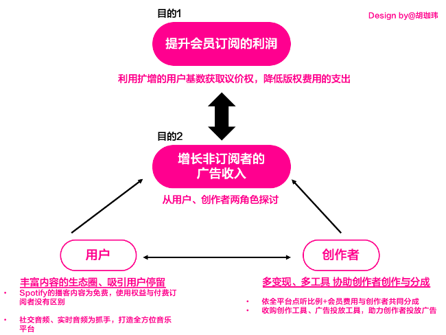
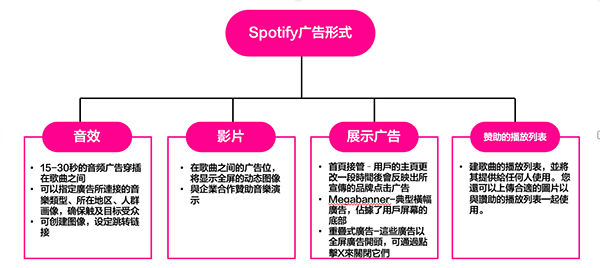

一、前言—播客的发展现状与趋势
2020年被誉为播客行业的爆发元年，不仅国内市场群雄混战（诞生了小宇宙、快艇等国内首批独立播客平台，国内音频市场三巨头（荔枝、喜马拉雅、蜻蜓FM）以及QQ音乐、网易云音乐等音乐流媒体平台也都纷纷加注，先后推出了自己的播客业务）。
以美国为首的海外市场，更是有超过一半的阅听人口（12岁以上）在长期、稳定的使用播客，并且成长趋势十分稳健。根据调查指出，美国人每周平均会收听六个左右的podcast频道，总收听时长平均是6小时39分钟。从上述数据显示，podcast的发展迈入了快速的增长期，海外podcast平台的市场份额占比也有了明显的变化，其中值得注意的是，音乐流平台spotify已于去年年底赶超apple podcast ，成为海外最主流播客收听的平台（今年每月至少有2820萬人透過Spotify收聽Podcast，Apple Podcast則有2800萬人收聽，Apple Podcast的市占率預計在今年下降至28.5％）。这几年内，Spotify在海外的高速增长，可以源于國外音樂產業过于嚴苛的版稅制度。
二、从Spotify的音乐流平台布局看发展现况
2020年被誉为播客行业的爆发元年，不仅国内市场群雄混战（诞生了小宇宙、快艇等国内首批独立播客平台，国内音频市场三巨头（荔枝、喜马拉雅、蜻蜓FM）以及QQ音乐、网易云音乐等音乐流媒体平台也都纷纷加注，先后推出了自己的播客业务）。
以美国为首的海外市场，更是有超过一半的阅听人口（12岁以上）在长期、稳定的使用播客，并且成长趋势十分稳健。根据调查指出，美国人每周平均会收听六个左右的podcast频道，总收听时长平均是6小时39分钟。从上述数据显示，podcast的发展迈入了快速的增长期，海外podcast平台的市场份额占比也有了明显的变化，其中值得注意的是，音乐流平台spotify已于去年年底赶超apple podcast ，成为海外最主流播客收听的平台（今年每月至少有2820萬人透過Spotify收聽Podcast，Apple Podcast則有2800萬人收聽，Apple Podcast的市占率預計在今年下降至28.5％）。这几年内，Spotify在海外的高速增长，可以源于國外音樂產業过于嚴苛的版稅制度。
（一）、 Spotify市场现状分析
Spotify是一家瑞典在线音乐流服务平台，为目前全球最大的流音乐服务商，由数字版权管理保护的音乐用户规模截至2021年6月有3.65亿，付费率更是占了百分之四十二，付費訂閱用戶數達到1.58億人（远高于国内音乐流平台：网易云音乐8.8%、QQ音乐10%）。根据财报指示，截止至2021年的第二季度，其成本收入仍保持在百分之70的高位，将近总所得的三分之二，需支付给音乐版权所有者（如右图所示）。
根据海外的严苛音乐版税制度，版税的支付方式需按照串流媒体平台的平台收入/播放量，向版权方支付相关的费用。这意味着，随着平台发展、用户基数成长，平台方需支付的费用也会水涨船高，尽管平台拥有超高的会员付费量，也需将大部分的收入支付给版权方。根据调查指出，Spotify已有尽百分之四十二的会员付费率，但需将大比例的收入交给头部的唱片集团（如：环球音乐集团、索尼音乐娱乐、华纳音乐集团、Kakao M四大唱片公司及其它唱片合作授权公司）。就整体营收来看，会员付费的收入属于客单价较低的业务，同时来源于免费订阅者的广告收入也有限，因此Spotify的当务之急必须是提升会员订阅的利润，并拟定策略增长免费订阅者的广收入。
然而，终究有些产品的形态是不适用于线上购物的，比如需要实地体验的床垫、沙发等单价高的家用品，单凭网上的参数和规格是远不及于线下的试躺。在互联网为消费者提供了高效的信息传递的同时，也让消费者损失了对产品的即时体验。
信息流的缺失、物流的运输时间成为了电商攻占零售业最直接的痛点，因此在新零售的特点是尽可能的将线上的高效、便捷性和线下的体验、即得感融合，因此，新零售可以被简单理解为更高效率的零售，不管是提升信息流、资金流或是物流的效率，只要能拉近消费者和产品的距离就是新零售。此概念也可以被简单理解为“更高效率的零售—提高信息流、资金流、物流的效率，拉近用户和产品的距离就是新零售。
（二）、 全视角的Spotify市场战略——“播客”拉把手，将“音乐的用户”转换为“平台的用户”
1、 全视角的Spotify市场战略分析
由上论述可知，提升付费会员订阅的利润和增加非订阅者的广告收入为平台持续发展当务之急。而提升会员订阅的利润势必需压缩对版权方的支出。
根據 Spotify 財報指出，版税的价格高低取决于用户群的规模、以及非订阅者的比例和高级付费用户的比例、广告费用与折扣等多变数的影响。除了在全球各地积极扩散用户规模外，Spotify透过制定低价的会员服务方案（如学生计划、家庭计划、情侣计划等），利用较低的订阅价格吸引用户，扩大用户数额。此策略的背后伴随着“增加业务功能”、“丰富内容生态”，等进阶模式吸引更多的消费群体，之后再透过加订会员服务以促进对用户的交叉消费，从中提高对上游議價能力。
诚然，但依靠扩大全球用户数额（如亚非、拉美地区）确实无法从根源上解决问题，再加上这些地区对使用内容的付费意识并不高，无法有效的推广会员付费。
因此，Spotify对业务的布局改从“内容”下手。根本上的增加业务种类和丰富内容的生态，吸引用户订阅，同时增强非订阅用户的平台粘性，借此收割广告收益。

由上图所示，目的为增长非订阅者的广告收入可从用户和创作的视角探讨，对于免费使用的用户来说，能留住他们他们的即是丰富的足够丰富的生态圈。这两年来，Spotify陆续收购社交音频平台、美国声音技术公司、有声书制作平台、语音社交平台、和播客内容制作、社交、发现平台等全音乐媒体的公司，试图将产品定位由“音乐流平台”拉升为“全音频流媒体服务平台。同时，透过与创作者多分成，与平台共同获利的模式，加上提供免付费的创作工具、广告工具，以增强创作者对平台的依赖度。
2、 spotify播客业务的布局解析
有近年来Spotify并购的公司可见，Spotify 一直大力投資 Podcast 業務。其原因在于与音乐流的业务不同，平台只需将广告收入和创作者分成，再搭配着部分会员订阅费用，相较于过于商品化且低利润音乐流业务，相较而言，Podcast 能长时间、精准的連吸引觀眾，可以连同创作者的内容一起創造寶貴的廣告投放機會。
在2018 年 10 月 Spotify 開放 Podcast 功能，立刻受廣大用戶歡迎，當年底收聽量大增 175%。隔年年初，Spotify 連續收購 Gimlet Media、Anchor 和 Paracast等播客托管播客制作平台。2020 年再次收購 Megaphone（Megaphone為广告科技公司，为Podcast發布商和廣告商提供技術，讓他們在podcast中尋找目標時段置入廣告，該公司提供podcast託管、分銷和廣告插入工具給podcast發佈者。并利用Megaphone的技術來製作具目標性的廣告，並向第三方Podcast發佈者提供專有的廣告插入工具（SAI））
2021 年又收購 Whoooshkaa（Whoooshkaa为播客技术平台，其可以简单地将现有的音频内容转换成点播播客内容）。
透过大肆收购播客相关平台的Spotify，在2021年底已超越Apple Music 成為美國最熱門的 Podcast 平台。根據全球市場研究機構 eMarketer 預測，Podcast 市場規模到 2023 年將達 20 億美元，Spotify透過即時廣告插播、內容行銷及收購網路廣告公司 Megaphone 達成 Podcast 貨幣化，有助 Podcast 出版商從內容賺取更多利潤。
也就是说，平台在丰富内容生态基础的同时，透过增加创作、自助广告渠道的方式拉拢创作者，助力创作者在平台生产内容的意愿。
（三）、 小结Spotify案例解析
平台在擁有足夠龐大的用戶規模和影響力后，可以向上游版權商，爭取議價權，为成本 “ 減輕負擔 ”。Spotify将播客的定位为高客单价的业务，一方面具有高广告收益的特性，同时丰富且免费的内容能吸引用户驻足，共同拉动平台新的增长。
三、 浅析Spotify广告业务与变现工具
（一）、Spotify的广告优势
根据最新一期的财报指出，Spotify的廣告收入大增 40%，至 3.94 億歐元（约等于27.26亿 人民幣）顯示隨著 Spotify 擴大 Podcast 業務，廣告收入增幅也隨之攀升。以往占總營收約 10% 的廣告業務，上季營收比重升至 15%。
而Spotify 能成為當今市場上最有效的廣告渠道之一的原因在于：其强大的用户基数与忠实的活跃用户（每月大约有2.45亿人），涵盖了所有人口统计数据，能提供更丰富的广告人群且搭配投放工具的精准定位，能高效的完成投放目标；次者，按照每消费一小时的内容就会有1-4分钟的广告的时间来计算，每日平均消费2.5小时内容的流媒体广告用户，长时间的用户使用时长能为广告植入留下了大量机会；三者，借着播客的内容特性——用户通常较专注听取内容，同时搭配高互动形式的访谈问答，能更加深用户对品牌的印象与好感度，为广告带来更好的效果；除此之外，Spotify年轻、活力的品牌调性容易将广告主的品牌赋予年轻、真实、创新、聪明、值得信赖的品牌印象，附加的品牌调性额外为广告主赋能；最后，会员付费的机制也成为筛选消费者的因素，平台可以帮助品牌方接触具有购买产品或服务能力的用户，也就是说，潜在地将品牌方与高价值的客户进行连接。
（二） 、投放广告流程与变现工具介绍
1、 自助广告平台——Spotify ad studio
Spotify ad studio为Spotify推出的自助广告平台，它综合了制作广告系列的工具、定位目标受众、跟踪投放结果的工具。它能自定义的创建属于自己的广告用以满足业务需求（如画外音或客制创意服务），在广告系列中能轻松的调整预算、受众和目标，以最大限度地提高效果。其受众订阅工具可适用于各种设备、档案格式实时监测用户的行为，并确保广告内容和用户的相关性与及时性。除此之外，自助广告平台也能满足对广告效果的数据分析，跟踪广告投放、效果、流媒体转换等，以了解广告到达目标受众的频率以及期望的结果方面的有效性。在广告价格的选择上则相对弹性，在设置首选目标和价格后，ad studio会提供免费的教学功能和指南，协助在投放过程的测试、监控和优化。

2、 广告形态与结构简介
Spotify Ad Studio提供的广告形式包括音频、视频和展示广告。音频和视频广告则是在歌曲之间的休息时间、主页面的广告位、歌曲banner中显示。而其中的播客广告又有些不同：在 Spotify 上的广告支持普通用户和高级付费用户都可以在播客剧集中的广告插播时间听到。
广告可以分为三个层次——广告系列、广告组和广告。广告系列包含一个或多个广告组。每个广告集都包含一组广告。这种结构可帮助广告主轻松高效地创建、管理和优化广告，更好地控制广告活动管理，并更深入地了解广告的效果。
3、 创新的播客广告技术——SAI串流媒体广告插入技术
传统播客行业通过剧集下载量来衡量广告投放与曝光次数。这意味着当音频文件下载到设备上时，对广告投放的洞察力就会停止。对广告商来说无法保证该剧集已被收听，更不用说收听者接触到广告或对广告采取了行动（例如，听众可能会在插播广告运行之前停止收听）。
而SAI是Spotify推出的实时、高匹配度、强互动的串流媒体广告插入技术，解决了企业无法大规模精准定位受众，并且对广告投放和效果的洞察力有限的问题。SAI技术能依据播客的内容计算其用户的偏好和画像并实时推送内容。此个性化的广告体验，不仅破解了广告投放的难题，还通过推送符合用户口味的内容提升了广告和听众的关联度，对于广告主而言，费用的计算也转换为只计算在剧集中实际听到广告的听众的展示次数。
根据Spotify官网数据所示，SAI的广告插入技术帮助廣告效益成长180%，总体的廣告收益也大幅增长了百分之29。目前也成为了推动品牌关键阶段增长的有效方式。（对于听众而言的熟悉度、亲和力、信息搜索意图、购买意向、推荐意向均有复合成长的趋势）
三、 总结：国内外发展播客的逻辑差异
近年来，在国内和海外的音乐流平台都可以看到发力播客业务的痕迹。然而，基于付费教育大环境和付费墙高低不同，Spotify发力播客业务的逻辑与国内平台是不同的。在音频业务的多元化上，国内平台做得更加完整，播客、直播、社交业务均有布局，其原因在于国内用户仍不具有为内容付费的习惯，扩张多元的音频业务能填补内容成本、赚取现金流，因此国内的平台不具有完整、成熟的变现工具与内容生态。
然而，国外音乐流平台（以Spotify为例）发力播客业务的逻辑是不同的。在海外具有稳定的付费基本盘，但是仅凭会员业务客单价过低、收入增长缓慢，且还有版权费用的高支出压迫，因此急需要找到一个高客单价的业务带动新的增长。而播客正具备这样的特性，具有足够丰富的内容、几乎微乎其微的创作者版权支出，能够同时吸引用户和培养创作者的粘性。除此之外，播客也是一个利于发展广告的培养皿，借助播客听众的高用户粘性和长时间使用的特性，播客广告具有相当不错的成效。因此，Spotify在战略布局上，积极收购内容、创意公司，也收购各类播客创作工具公司、广告变现工具、数据洞察公司，为助力创作者创作内容与变现。
——
——
——